Portable XAMPP and Sublime Editor Setup
by: Dewan Ahmed Muhtasim, lecturer, CSEIn this course, we need to developed web pages. Later, in the second half of the semester, you are going to develop a web-based system. If the pages are static HTML and CSS files, the software requirement is simple, where you only need a text editor (like Notepad or Sublime text editor) and a web browser to view the pages. However, you need more than that because besides those files, you are going to develop server side scripts in PHP. The PHP will do many operations that include connecting to a database. To run the PHP, you need a web server. On the other hand, to have a database, surely you need a database server. To make things easier, lets use a software package called XAMPP that can help you to install both the web and database server with minimum effort to configure settings and so on.
XAMPP is a free and open source cross-platform web server solution stack package developed by Apache Friends, consisting mainly of the Apache HTTP Server, MySQL database, and interpreters for scripts written in the PHP and Perl programming languages. XAMPP is a portable software. So it can be run without installation to system folder and it does not leave any traces in system registry. It means you can install a web server and a database server into a portable disk and start the services once you needed.
Firstly, you need to prepare a flash drive or an external hard drive. Make sure that you have minimum of 1GB of free spaces in the drive. In this tutorial, I assume that you have a flash drive. Then, go to this address:
https://www.apachefriends.org/download.html
In there, you’ll see various kinds of packages. Please:
Once the downloading has completed, double click the installer file to start the XAMPP setup process. Press Next > until you see a windows as below:
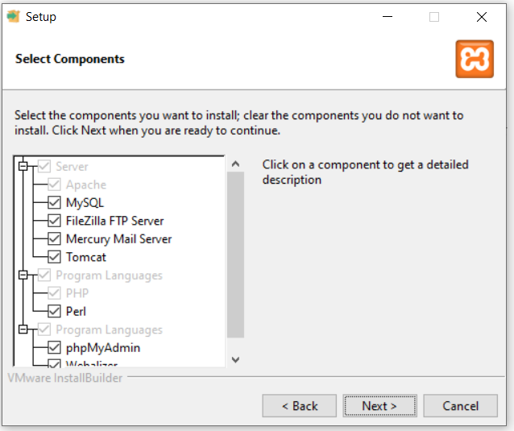
For this class, we only need the followings:
In the next window, as below, change the installation folder to your flash drive. In my case, my flash drive is in Drive C:\XAMPP. Your flash drive may had been assigned to another drive letter. Change the drive letter and maintain the xampp folder. Then, press Next >.
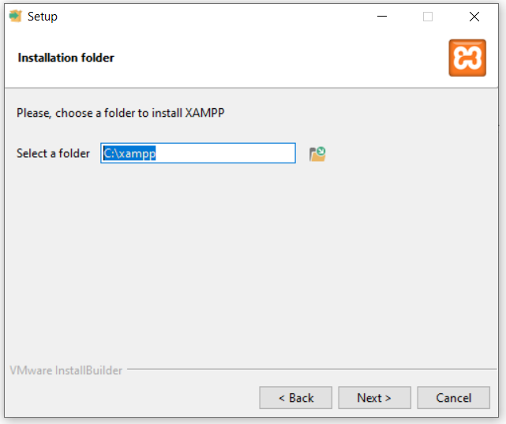
Press the Next > buttons until the installation starts as below:
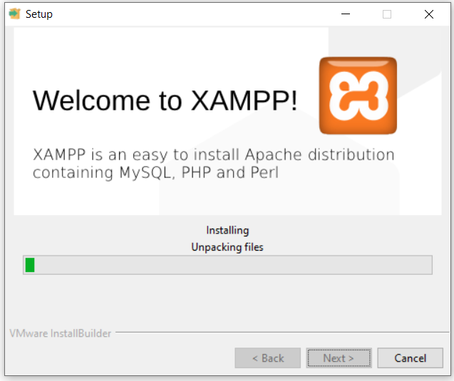
It will take some time to complete. Once the installation is completed, you will see a window like this:
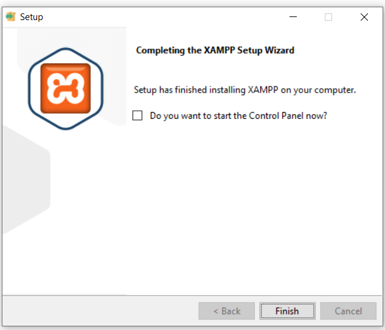
Uncheck the checkbox so that you will not start the Control Panel now. Press Finish to end the installation.
In this section, you will test whether or not your local computer has services that will interfere the Apache web server and MySQL database server. Apache web server runs, by default, in port 80 while MySQL database server runs in port 3306. So, you need to make sure that no other software in your local computer use those port numbers. Other software that might use the port 80 are Internet Information Server (IIS) and Skype.
Firstly, you need to scan all opened (used) ports in your local computer. To do that, run your Command Prompt.
Make sure that you run it as Run as administrator.
Type the following command and press Enter.
netstat -a -n -oIn my case, I will see outputs like this:
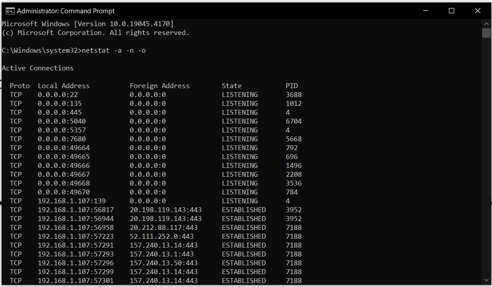
As you can see in above image, in my case, both 80 and 3306 ports of my computer are not in used by any unknown software. Please refer to the Local Address column. Port number is a number after the IP address. The address format is x.x.x.x:port. In your case, your computer might show different numbers. If you can't find port 80 and 3306 under the Local Address, it means you are OK. You no need to kill any proceses. You can proceed to Part 3.
For example, let's say my port 80 is used by a software identified by PID = 5804. To kill the process, execute this command:
taskkill /pid 5804Replace the 5804 with a number showed in your console. The output of this operation is:
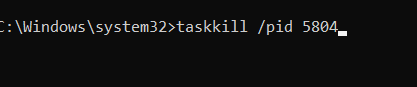
For example, let's say my port 3306 is used by a software identified by PID = 6540. I would kill the process, by executing this command:
taskkill /pid 6540 /f/f is to force the process to stop. My console looks like this:
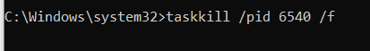
Close your Command Prompt console to end this part.
To start your web server, you need to open the XAMPP Control Panel. Open your file explorer and browse your flash drive until the installation drive:\xampp\ folder.
Since you will use your flash drive in different computers, it good to make a habit to setup the XAMPP first. This is to ensure that your XAMPP can properly run with correct configuration. For example, different computers will assign your flash drive with a different drive letter. You can do this by double clicking the setup_xampp.bat file. You will see output like this:
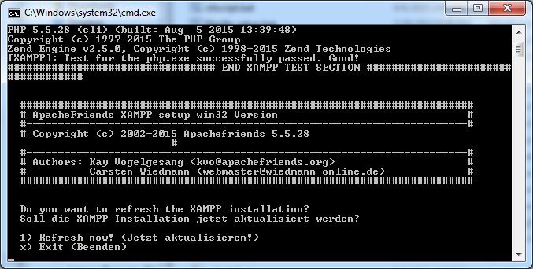
Type 1 and press Enter. You will get:
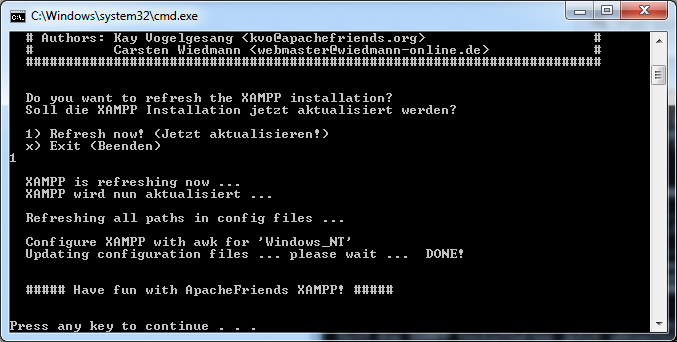
On the other hand, if you get Nothing to do message like in the image below, it means you are all set. The current configuration is matched with your current flash drive. Just press any key to close the command prompt dialog.
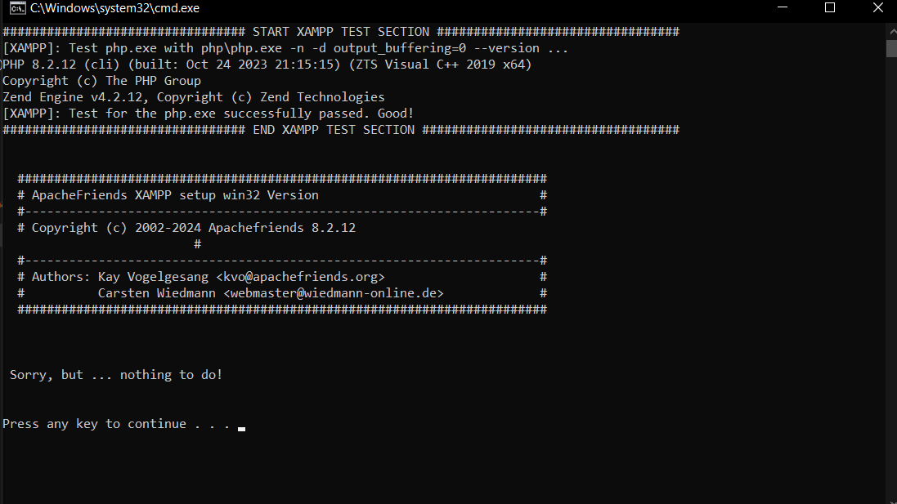
Once OK then, double click the xampp-control.exe file.
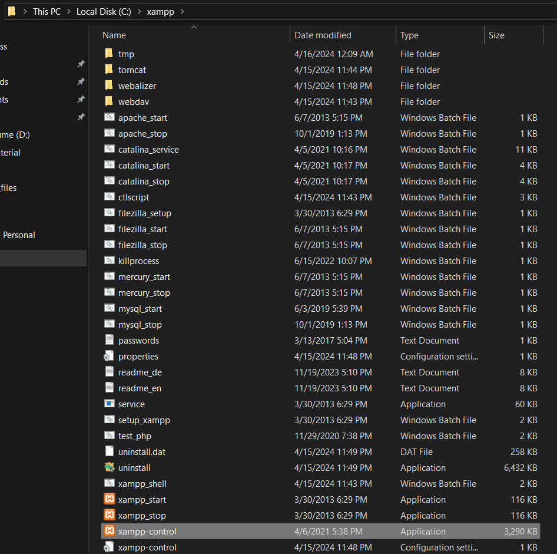
You will see a Control Panel window like this:
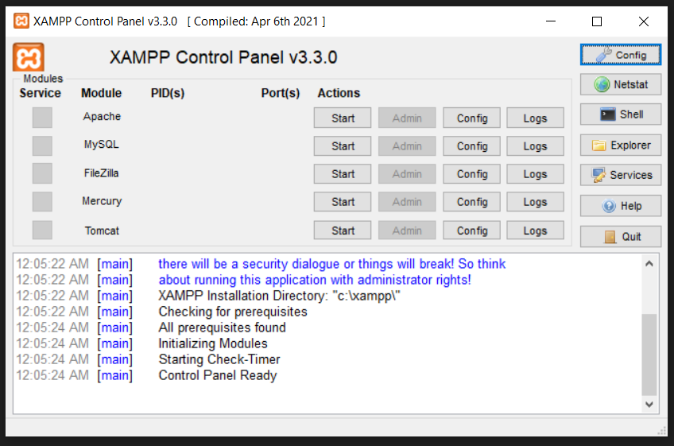
To start the Apache web server, click the Start button of the Apache module. Wait until you will see the Apache module is highlighted as green. This means the service is started as below.
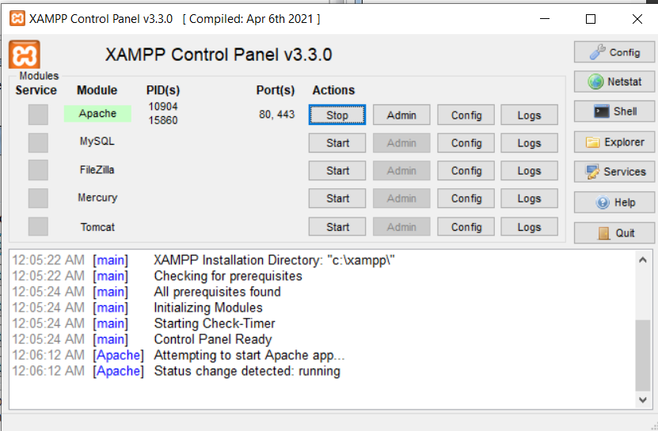
Once the web service is started, you can test to open web pages from your localhost (your local computer). To open a default page of XAMPP, open your Web Browser and type this URL:
http://localhostYou will be directed to localhost/dashboard/ like this page:
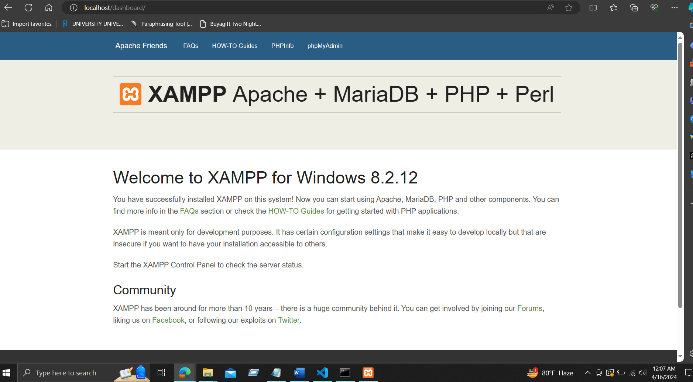
Having this page means that your web server is up and running. All web pages that you want to host must be saved in drive:\xampp\htdocs folder. The dashboard in the URL is actually a folder in the htdocs folder. Open your file explorer and browse up to the dashboard folder.
Open back the XAMPP Control Panel. To start the MySQL database server, click the Start button of the MySQL module. Wait until you will see the MySQL module is highlighted as green as below.
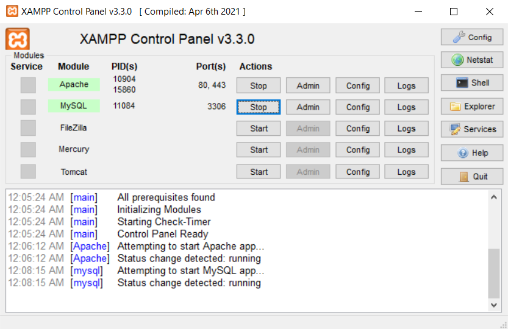
phpMyAdmin is a free and open source tool written in PHP intended to handle the administration of MySQL with the use of a web browser. It can perform various tasks such as creating, modifying or deleting databases, tables, fields or rows; executing SQL statements; or managing users and permissions.
To start phpMyAdmin, open your web browser and enter this URL:
http://localhost/phpmyadmin/You will open a page like this:
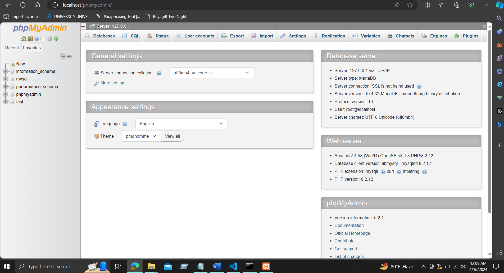
In this project, we will write our codes in a text editor. Obviously, if you are using Windows operating system, the Notepad will do the job. But, we need a better text editor. There are may good text editors like the Adobe Dreamweaver CS4 HTML editor, Atom, Brackets and Notepad++. Instead of those editors we are going to use the Sublime Text Editor. Please note, you can use any editor you like. Sublime is a sophisticated text editor for code, markup and prose. It has a slick user interface, extraordinary features and amazing performance. The most important is that it is FREE. Most of expert users like to use text editor to compose HTML and PHP to gain flexibilty and performance. To download a Sublime Editor, go to this URL:
https://www.sublimetext.com/download
In there, you’ll see various kinds of versions. Click on windows to download the setupfile.
Once the downloading has completed, double click the installer file to start the Sublime setup process. Press Next > until you see a windows as below:
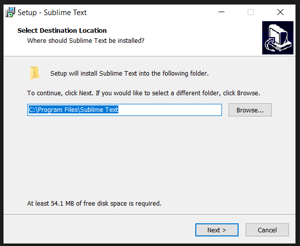
Change the installation folder to your flash drive. In my case, my flash drive is in Drive C:\. Maintain the Sublime Text 4 as the name of the installation folder. Then, press Next > until you press Install. To end the installation process, press Finish button in the last installation window as below:
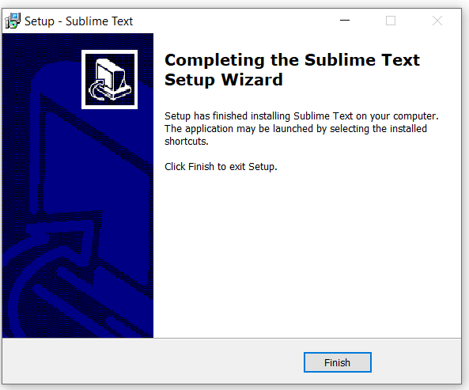
Open your file explorer and browse, or search for Sublime Text folder.Double click the sublime_text.exe file and you will see a text editor like this:
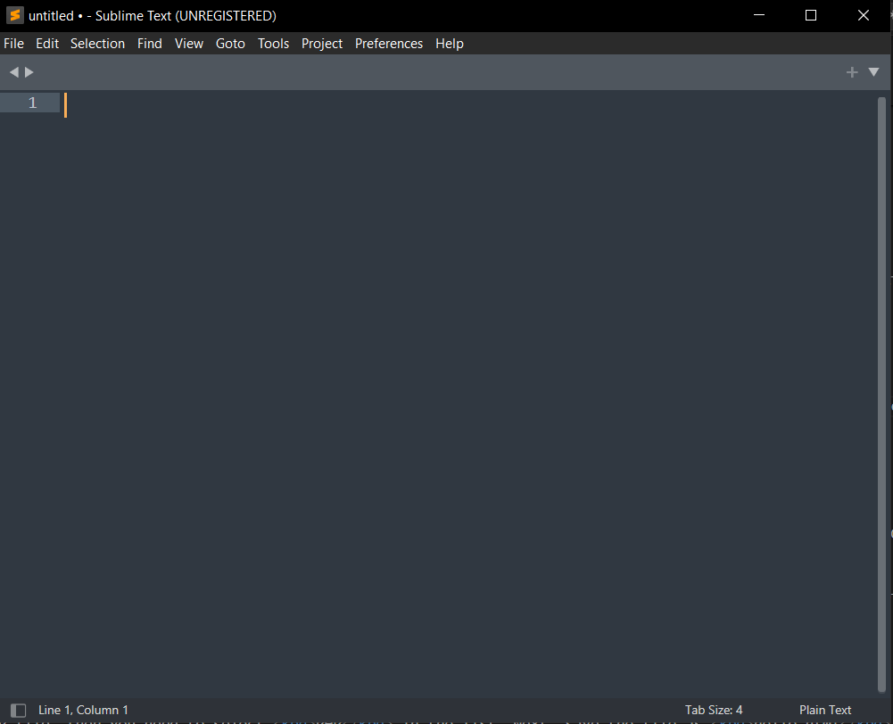
In this way, you make Sublime Text Editor as a portable software. You will carry this text editor in your flash drive anywhere anytime. Once you start your web and database servers, you can open Sublime and start coding.
As a start, lets create your first HTML page using Sublime and save in htdocs folder. Create a new file. First thing is to set the type and syntax of your file by selecting HTML at the bottom-right corner of your Sublime like:
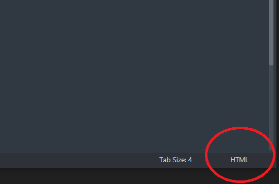
Later if you are composing a PHP file, then you need to select PHP in the list. Next, save the file as hello.html. Copy and paste the following codes in Sublime. Alternatively, you can type html and press tab. A skeleton of HTML code will be automatically created.
1 2 3 4 5 6 7 8 9 10 | <!DOCTYPE html><html><head><meta charset = "utf-8"><title>Hello</title></head><body><p>Now you know how to start your Project 300!</p></body></html> |
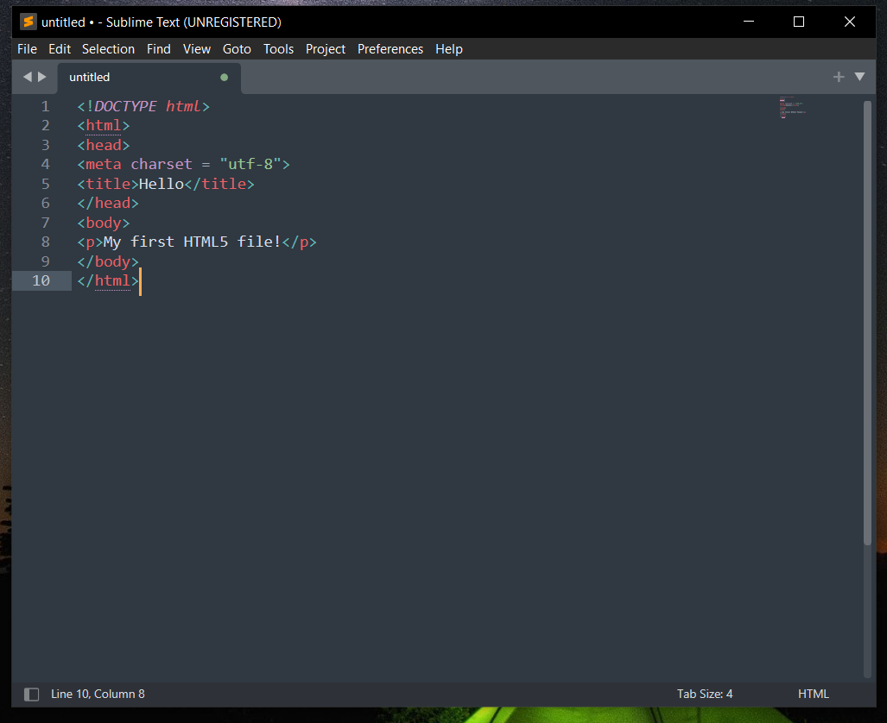
Save the HTML file in your XAMPP\htdocs folder by clicking save as. Open your web browser and type this URL:
http://localhost/hello.htmlYou will get a page like this:
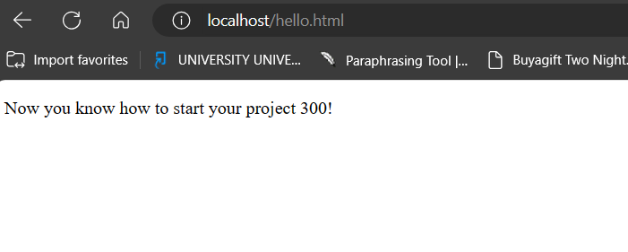